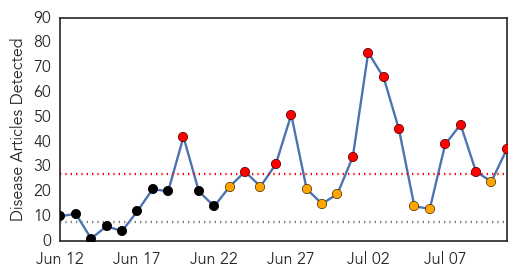
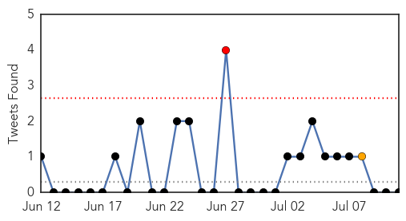
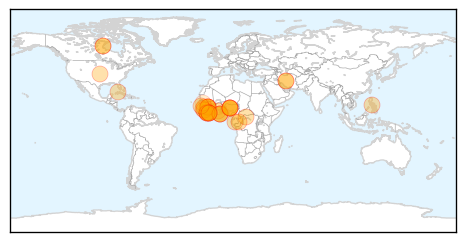
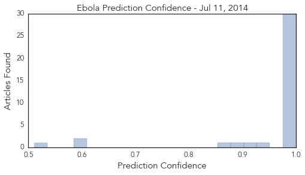

Ebola
30-Day Web Trend
12 alerts, 8 warnings

30-Day Twitter Trend
7 alerts, 0 warnings

Article Locations
Article Confidences
Top Articles:
- 1.000
- West Africa Facing Largest Ebola Outbreak Ever
- 1.000
- WHO Announces that Ebola Death Toll Increases
- 1.000
- Misconceptions fuel spread of Ebola in West Africa
- 1.000
- UN says rumours, fear help Ebola spread
- 1.000
- The Facts Behind A Frightening Virus
- 1.000
- Africa’s ‘unprecedented’ Ebola crisis
- 1.000
- Sierra Leone: Race against time to control the Ebola outbreak
- 1.000
- Ebola epidemic: 'For some, Ebola is akin to magic'
- 1.000
- Surge in Deaths From Virus in Guinea, Liberia and Sierra Leone
- 1.000
- Ebola epidemic unlikely to spread beyond Africa
- 1.000
- Ebola epidemic unprecedented in West Africa, medical aid group says
- 1.000
- West Africa Ebola outbreak nears 900 cases
- 1.000
- 'Race against time' to control ebola outbreak
- 1.000
- Flashcard: Ebola
- 1.000
- Ebola Outbreak Plagues West Africa
- 0.999
- Unicef says misconceptions fuel Ebola outbreak in West Africa
- 0.999
- West Africa Ebola Outbreak Forces Hundreds to be Kept Under Surveillance in Liberia
- 0.999
- More than 500 dead from Ebola in west Africa as virus continues to spread
- 0.999
- WHO warns ebola deaths on the increase
- 0.998
- Ebola aid for West Africa
- 0.998
- Ebola virus in Guinea is a new strain, not imported from other African countries
- 0.998
- Ebola became a matter of belief in Liberia - Liberia
- 0.998
- West Africa Looks To Mobile Technology To Help Stop Ebola
- 0.997
- Tests rule out Ebola in case of sick Saskatchewan man, say health officials
- 0.997
- Ebola deaths surge in Sierra Leone and Liberia - WHO
- 0.994
- Ebola Outbreak Provokes Shift in Attitudes Towards Health Care and Burial Rituals in Sierra Leone
- 0.990
- Misconceptions fuel Ebola outbreak in west Africa: UNICEF
- 0.988
- Ministries of health, Agriculture, Interior Partner on Ebola Virus
- 0.980
- Police: Essex shooting victim targeted, robbed
- 0.980
- Influx of child migrants demands immediate U.S. response
- 0.946
- ECOWAS leaders set up fund to deal with the Ebola
- 0.910
- ECOWAS summit dominates Ghanaian media
- 0.900
- MOH Puts 433 Persons under Surveillance
- 0.877
- President Koroma Attends 45th ECOWAS Summit
- 0.603
- NP supports EBOLA fight « Awoko Newspaper
- 0.602
- ECOWAS leaders establish solidarity fund for Ebola
- 0.511
- Minister challenges doctors to public debate over strike
Top Tweets:
-
No tweets found for Jul 11, 2014
Chikungunya
30-Day Web Trend
5 alerts, 0 warnings

30-Day Twitter Trend
0 alerts, 0 warnings

Article Locations

Article Confidences

Top Articles:
- 0.999
- Harris County confirms 1st chikungunya case in Houston area - KYTX CBS19.tv - News, Weather, & Sports
- 0.999
- Harris County confirms first case of chikungunya, mosquito-borne disease
- 0.997
- Chikungunya Virus Confirmed in SC
- 0.995
- This is a sobering statistic on the spread of Chikungunya across the Caribbean
- 0.995
- Chikungunya virus found in S.C. resident
- 0.995
- The Chikungunya Virus Spreads in Haiti
- 0.992
- The Nassau Guardian
- 0.989
- DHEC confirms first case of 'Chikungunya' in Palmetto State
- 0.987
- Mississippi has 2 more cases of mosquito-borne virus
- 0.985
- Two more Mississippians confirmed having dangerous illness from Caribbean
- 0.985
- Two new Chikungunya cases confirmed in Mississippi
- 0.981
- 'Major epidemic' of mosquito-born chikungunya hits French West Indies
- 0.969
- Harris County has first case of mosquito-borne Chikungunya virus
Top Tweets:
-
No tweets found for Jul 11, 2014